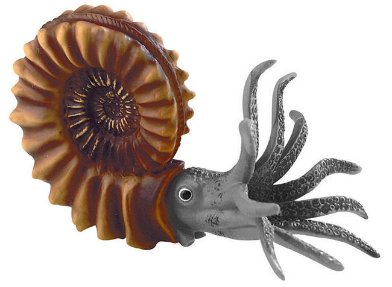
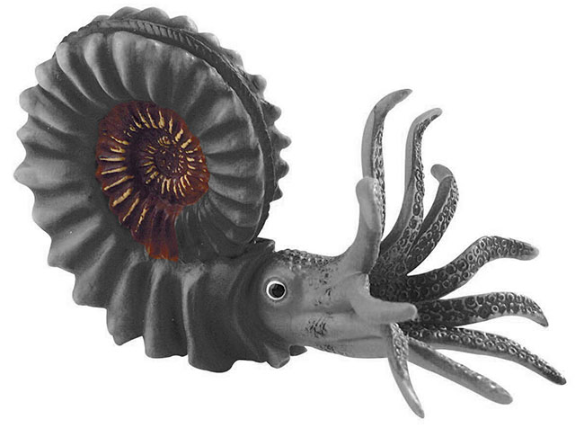
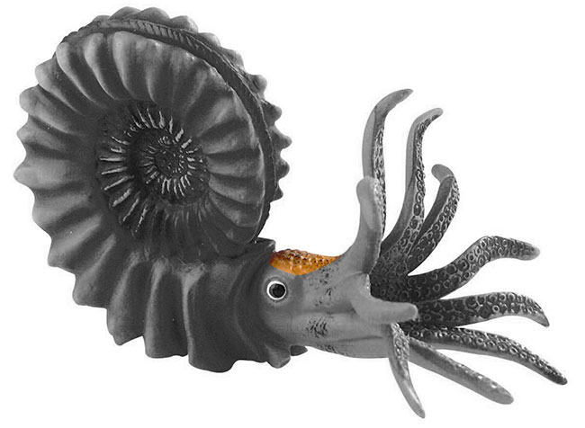
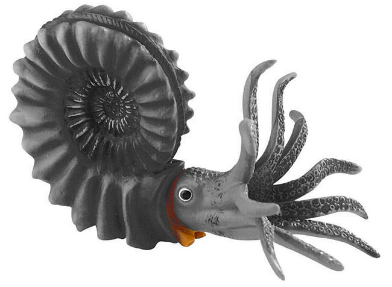
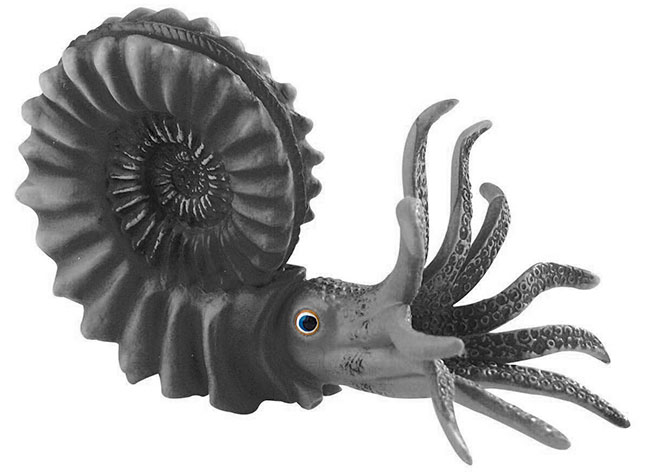

Amonita
- Nombre científico:Arietites (Agassiziceras) Scipionianus Roemer
- Localidad:Alemania
- Período:Jurásico inferior
- Nombre común:Amonita
Descripción
Los ammonoideos (Ammonoidea), conocidos comúnmente como amonites,1 son una subclase de moluscos cefalópodos extintos que existieron en los mares desde el Ordovícico (hace unos 340 millones de años) hasta finales del Cretácico (hace 66 millones de años).2 Gracias a su rápida evolución y distribución mundial son excelentes fósiles guía para la datación de rocas y han posibilitado la elaboración de sucesiones de biozonas de gran precisión bioestratigráfica.
Para estudiar el ambiente que habitaban las diferentes especies de amonites hay que estudiar las posiciones del centro de gravedad y de flotación de la concha, ya que éstos determinan la forma de desplazamiento:
- La longitud de la cámara de habitación determina la posición del centro de gravedad.
- Estabilidad estática: está en relación directa con la distancia entre los centros de flotación y gravedad.
- Estabilidad dinámica: depende de la forma de la cámara de habitación; básicamente, de la distancia entre la abertura de la concha (punto de empuje del individuo) y el centro de flotación.
Anatomía
-

Corteza dura
Concha fina de aragonito planiespiraladaa y con una ornamentación muy marcada, constituida por costillas bien definidas.
-

Cámaras
La concha se divide en dos cámaras: el "fragmocono", que es la parte tabicada de la concha donde se almacenan los gases que controlan la flotación; y la "cámara anterior", que es donde se alojaban las partes blandas.
-

Branquias
Excrecencias de la pared corporal formada por un eje central que se insertaba ambos lados y permitían el intercambio gaseoso como sistema respiratorio.
-
Tentáculos
Órganos alargados flexibles que servían para la alimentación, cómo órganos sensitivo o simplemente para agarrar.
-

Siphon
Orificio de los septos que permite la comunicación con el resto de las cámaras.
-

Ojos
Eel ojo funcionaba proyectando imágenes a la retina, donde la luz se transformaba gracias a unas células llamadas fotoreceptoras en impulsos nerviosos que eran trasladados a través del nervio óptico al cerebro.
Sobre este ejemplar
Los Amonitas constituyen un grupo extinto de moluscos cefalópodos. Los animales actuales más relacionados son el pulpo, el calamar, y el NATILUS.
Este ejemplar del genero pachydiscua, pertenece a una especie gigantesca que pobló hace 70millones de años, en el mar que cubría la parte norte de la República Mexicana.
El interior de la concha calcarea de los amonitas esta dividida en camaras por medio de tabiques transversales. En la última camara, la mayor, habitaba un animal semejante al pulpo.
En el presente ejemplar se presento el molde interno de la concha como resultado de la consolidación de los sedimentos que la rellenaron y de la disolución posterior de la concha propiamente dicha.
- Nombre Científico: Pachydiscus SP
- Nombre común: Amonita
- Localidad: Parte norte del estado de Coahuila, México